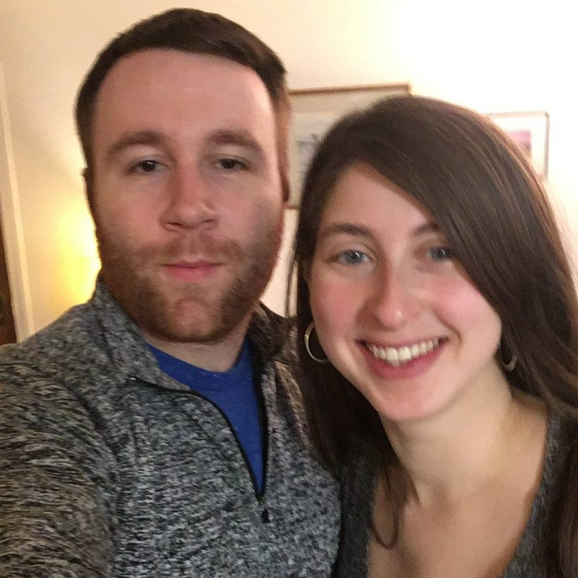

This is my wife Jenn and I shortly after we started dating.
About me
Some random facts about me are below, check them out!
Random Facts
| Favorite color |
Current car |
Occupation |
Birthday |
Sex |
Marital status |
| Blue |
Blue, 2014 Honda Civic |
Inside Sales |
05/02/1989 |
Male |
Married |
Interesting things about me:
- I studied abroad for a semester each in Italy and Spain
- I love to travel
- I am an amateur mixologist and love to experiment with making fun and interesting cocktails
- I am currently studying to get my Masters in Software Development from B.U. MET
- I am an avid reader and my favorite book is "Dune" by Frank Herbert
- I love Monet, as you can see from the background image!